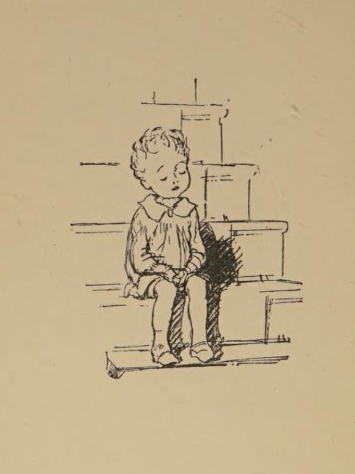

Phonogram ck video
This lesson is about the digraph ck, the sound it makes, and how to write it. Follow along with this video to write and sound out the ck consonant digraph phonogram.
This lesson is about the digraph ck, the sound it makes, and how to write it. Follow along with this video to write and sound out the ck consonant digraph phonogram.
Play level 1 of the Consonant Digraph Sound Game.
